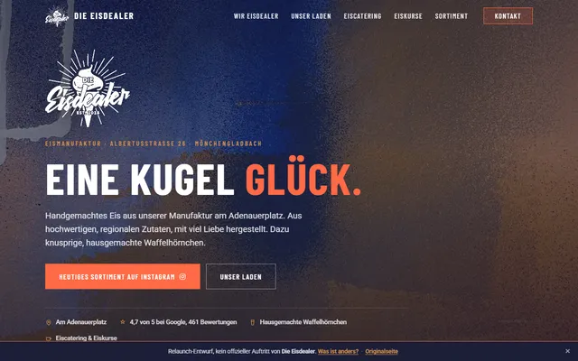

Was diese Seite ist, was sie anders macht und wie es weitergehen könnte. In wenigen Minuten lesbar.
Ihre Inhalte sind stark: das Bankhaus, die Presse-Zitate, der Konferenzsaal, die schönen Karten. Dieser Entwurf bringt sie auf eine schnelle, moderne Seite, die diese Stärken auch zeigt.
Die Farbwelt stammt direkt aus Ihren schönsten Markenzeichen: den Tafel-Speisekarten mit Mint-Rahmen und dem Messing der Kronleuchter im Bankhaus.
Die Überschriften-Schrift ist Cormorant Garamond, eine klassische Schrift mit den kleinen Häkchen, deren Buchstabenformen an die Ihrer gedruckten Speisekarte anknüpfen. Dazu Mulish für den Fließtext. Beide liegen direkt auf dem Server. Ihr Kreide-Logo mit dem Kaffeering bleibt unangetastet und trägt den Auftritt.
Werte der bestehenden Wix-Seite am 15.07.2026 live gemessen.
Die Speisen-Seite heißt technisch „kopie-von-fotos", der Menüpunkt „Erlebnisse" führt auf eine leere Seite mit englischem Platzhaltertext, und die Seite lädt spürbar langsam, besonders mobil. Alles typische Wix-Effekte, die sich mit einer schlanken, eigenen Seite von selbst erledigen.
Die Location ist einzigartig, die Presse-Zitate sind Gold wert, die Fotos sind reichlich vorhanden und die Karten wunderschön gestaltet. Dieser Entwurf erfindet nichts Neues, er räumt auf und macht das Vorhandene sichtbar, auch für Google und KI-Suchen wie ChatGPT.
Ihre bestehende Wix-Seite bleibt unangetastet und wird vollständig gesichert. Die neue Seite läuft zunächst als Vorschau parallel; umgeschaltet wird erst, wenn Sie zufrieden sind. Auch danach bleibt der alte Auftritt jederzeit wiederherstellbar. Und ohne Wix-Abo sinken die laufenden Kosten.
Reservierungsformular, pflegbare Veranstaltungen, News oder datensparsame Besuchsstatistik: alles in Komfortstufen nachrüstbar, von kostenfrei (gegen gelegentliches Selbst-Einloggen) über nutzungsbasiert bis zur kleinen Monatsgebühr. Sie wählen, was zu Ihnen passt.
Eine Auswahl weiterer Seiten aus meiner Werkstatt, von live betriebenen Kundenseiten bis zu Entwürfen.


Pilates- und Reformer-Studio in Essen, live betriebene Kundenseite mit Online-Buchung.
Live ansehen ↗
Mobiles Kaffeecatering aus Mönchengladbach, live betriebene Kundenseite.
Live ansehen ↗
Eismanufaktur am Adenauerplatz, Redesign-Entwurf in der Street-Optik der Marke.
Ansehen ↗

Ein klar umrissener Umfang zum Festpreis. Fest heißt fest: kein Fass ohne Boden, keine Nachforderungen.
Weder anonyme Großagentur mit langen Wegen noch Gelegenheitsanbieter: ein Ansprechpartner, alles aus einer Hand, direkt aus Mönchengladbach.
Reservierung, pflegbare Inhalte, News oder Statistik: nachrüstbar in Komfortstufen, von kostenfrei bis zur kleinen Monatsgebühr.
Volle Nutzungsrechte, kein Abo-Zwang, kein Nachverkauf durch die Hintertür. Sie können jederzeit alles mitnehmen.